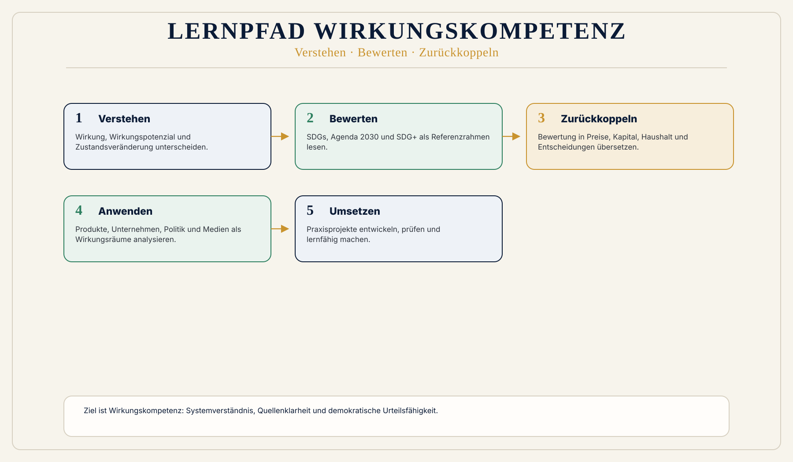

Alltag
Eine Kommune, ein Unternehmen oder ein Haushalt sieht oft zuerst Budget, Pflichten und Druck. WÖk ergänzt die Frage: Welche Wirkung entsteht dadurch?
 Wirkungsökonomie
Wirkungsökonomie
Für wen · Akademie und Wirkungskompetenz
Wirkungskompetenz wird zur Schlüsselkompetenz komplexer Gesellschaften.
Wer die Zukunft gestalten will, muss mehr können als Fakten wiederholen oder Meinungen verteidigen.
Menschen müssen lernen, Wirkung zu sehen: welche Zustände sich verändern, welche Wirkungspotenziale entstehen, welche Rückkopplungen greifen, welche Zielkonflikte bestehen und wie Entscheidungen auf Mensch, Planet und Demokratie wirken.
Die WÖk-Akademie ist der Lernraum dafür.
Einfach erklärt
Die Seite übersetzt Wirkungsökonomie in eine konkrete Rolle. Entscheidend ist nicht, ob jemand gut gemeint handelt, sondern welche Zustände durch Entscheidungen tatsächlich verändert werden.
Eine Kommune, ein Unternehmen oder ein Haushalt sieht oft zuerst Budget, Pflichten und Druck. WÖk ergänzt die Frage: Welche Wirkung entsteht dadurch?
Wirkung bleibt neutral. Erst der Referenzrahmen zeigt, ob eine Veränderung positiv, negativ oder ambivalent ist.
Prüfbar wird es, wenn Ziele, Datenqualität, Betroffene, Zeitraum und Rückkopplung offen genannt werden.
Warum diese Perspektive wichtig ist
Unsere Bildungssysteme vermitteln Wissen, Kompetenzen und Abschlüsse. Aber sie trainieren zu wenig, Systeme in Wirkung zu lesen.
Deshalb entstehen Debatten, in denen Fakten, Frames, Gefühle, Interessen, Daten, Risiken und Wirkungsebenen durcheinandergeraten.
Wirkungskompetenz ist die Fähigkeit, diese Ebenen zu trennen und wieder zusammenzuführen.
Was heute falsch läuft
Bildung misst Noten, Abschlüsse, Tests, Kompetenzen und Arbeitsmarktfähigkeit.
Medienkompetenz bleibt zu eng, wenn sie nur Quellenprüfung meint.
Wirtschaftskompetenz bleibt zu eng, wenn sie Kapital als Maßstab übernimmt.
Warum Reparatur nicht reicht
Wissen allein erzeugt noch keine Wirkungskompetenz. Menschen können Fakten kennen und trotzdem Wirkung, Zielkonflikte, Rückkopplungen und Systemgrenzen verwechseln.
Die WÖk-Akademie trainiert deshalb Verstehen, Bewerten, Zurückkoppeln, Anwenden und Umsetzen.
WÖk-Verschiebung
Die Akademie organisiert Lernen entlang des WÖk-Roten-Fadens: Verstehen - Bewerten - Zurückkoppeln - Anwenden - Umsetzen.
Wirkung wird nicht als Meinung gelehrt, sondern als Analyse von Zustandsveränderung, Wirkungsräumen, Daten, Bewertung, Rückkopplung und Systemgrenzen.
Konkreter Gewinn
Was nicht passiert
Die Akademie ist keine Indoktrination.
Sie ersetzt keine wissenschaftliche Kritik.
Sie trainiert Wirkungslogik, Systemverständnis, Quellenklarheit und demokratische Urteilsfähigkeit.
Wirkungspfad
Konkretes Beispiel
Ein Lernmodul zu politischer Sprache prüft nicht, welche Partei sympathisch ist. Es analysiert, wie ein Begriff wirkt: Welche Frames entstehen? Welche Resonanzräume werden geöffnet? Welche Wirkungspotenziale entstehen? Welche SDG+-Dimensionen sind betroffen?
Visual
Sieben Teile als ruhiger Lernpfad: Grundverständnis, Wirkungskompetenz, Maßstab, Rückkopplung, Anwendung, Transformation, Praxisprojekt.

Vertiefung
Die nächste Frage lautet nicht, wie diese Zielgruppe nachhaltiger wird. Sie lautet: Welche alte Steuerungslogik erzeugt das Problem, und wie verändert Wirkung die Logik selbst?
Quellenbasis / Einordnung